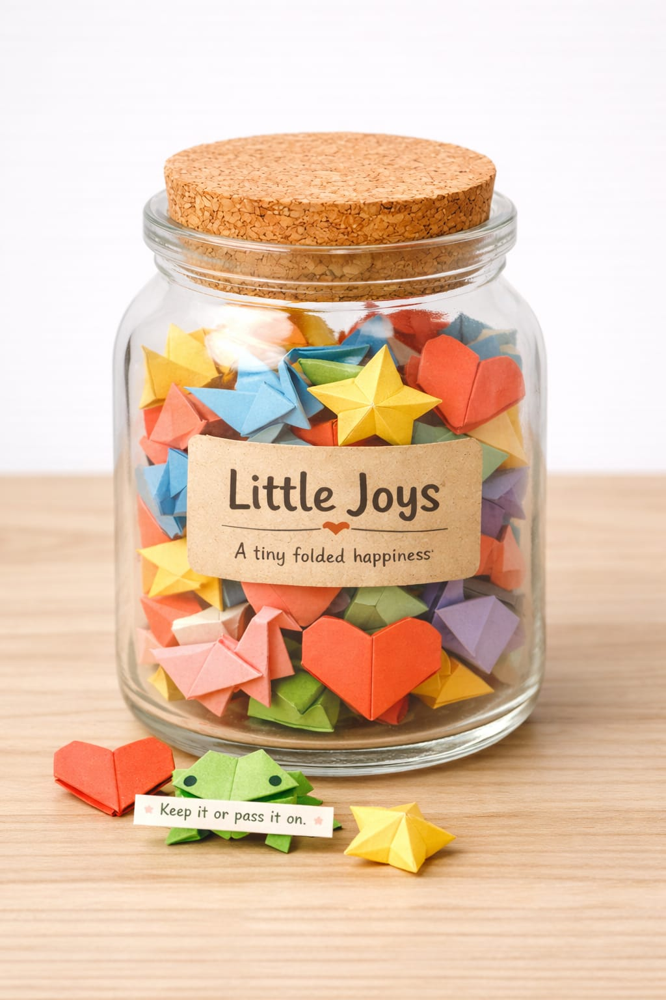

Goppo Guro is a pause for the relationship we've lost with play and paper. We invite you to a
space where imagination has no timer, and discovery has no right answers.
Goppo Guro is a creative learning initiative designed to nurture curiosity and foster human connection.
We believe that small stories (গপ্পো) and gentle beginnings (গুঁড়ো) can spark lifelong journeys of discovery.
Through handcrafted paper experiences and storytelling, we create a space where imagination knows no bounds.
Our mission is to bring play, paper, and pause back into our high-speed lives.
The Process
Creative Learning Cycle
Our framework follows a natural progression of curiosity and creation.
01
Spark
A moment of wonder or a simple question that ignites interest.
02
Explore
Diving deep into paper, story, and play without expectations.
03
Create
Building, folding, and shaping thoughts into tangible forms.
04
Connect
Sharing the journey and its outcomes with the community.
Our Approach
The 4P Framework
We create stories, tools & experiences that spark imagination, nurture creativity and build meaningful connections.
Publication
Research-driven publications that inform, inspire and create impact.
Research
In-depth research on stories, culture, creativity, education and childhood.
Blog
Thoughtful articles sharing ideas, insights and creative inspirations.
Professional Expertise
Conversations and expert perspectives from educators, creators and practitioners.
Programme
Creative learning programmes that nurture imagination, curiosity and confidence.
GCLP
Creative Programme in Primary Education — bringing creativity, storytelling and joy into early learning.
Golpoka Creative Club
A monthly creative adventure for children to imagine, create and grow.
Little Joys Women Empowerment
Empowering women through creative work, skills and financial independence.
Project
Community projects that build connection, collaboration and change.
Goppoguro Community Studio
A creative space for collaboration, learning and community engagement.
Little Joys
Handcrafted paper creations that spread happiness and support our women makers.
Goppoguro Boithok – Podcast
Conversations around stories, creativity, education and life.

Product
Thoughtfully designed products that make learning, play and storytelling joyful.
Activity Books & Play Books
Story + play + creativity — engaging experiences that make learning joyful.
Little Joys
Tiny handfolded paper treasures that carry big emotions.
RolGol & Graphic Novels
Unroll adventure and timeless classics retold through powerful visuals.
Stories in our hearts. Creativity in our hands. A better world in our imagination. ♥
The Art of Presence
Design for Pause & Play
Our experiences are invitations to slow down. There are no right answers, no timers, and no
expectations—only the quiet joy of being present.
The Human Touch
Every piece is hand-folded by local women artisans, carrying the time, patience, and
personal rhythm of the hands that shaped it.
Meaningful Messages
"Keep it or pass it on" — every jar comes with heartfelt messages encouraging
the chain of kindness to continue spreading joy.
Collective Care
Experience a system where kindness ripples outward. Every engagement directly supports
children's education and welfare programs across Bangladesh.
Perfect for Gifting
From classrooms to coffee shops, homes to hospitals — Little Joys bring
smiles everywhere, making them the perfect meaningful gift.
· · ·
Our Mission
Play. Paper. Pause.
A creative learning initiative that brings curiosity, connection, and the quiet joy of making back into everyday life — one fold at a time.
Children Reached
500+
across Bangladesh
Little Joys
10K+
shared
The Tagline
"Small stories, gentle beginnings that invite curiosity and connection."
Partner Schools
50+
and growing
Women Artisans
100%
handmade by local makers
· · ·
Our Story
Born from a Quiet Concern
Goppo Guro was created from a quiet concern — that we are losing our relationship with play,
with paper, and with pause. In a world driven by speed, screens, and outcomes, we wanted to
create space for something more human.
At the heart of Goppo Guro is story. Our name "গপ্পো গুঁড়ো" means small stories, or sparks
of stories — gentle beginnings that invite curiosity and connection. Stories have shaped our
world, and they continue to shape us through imagination and memory.
Goppo Guro is not only for children. It is for anyone who believes that stories, play, and
pause are essential to being human. We design books, stories, and simple paper experiences
that allow these small stories to unfold through play.
"There are no right answers here, no timers, no expectations — only moments of presence,
imagination, and shared discovery."
Every Little Joy is hand-folded by women who turn simple paper into moments of care.
This work offers flexible income, creative focus, and
dignity — without factories or machines.
Each fold carries time, patience, and a personal rhythm. When you pick a piece, you are
participating in a system where care is created by hands that matter.
Made by Hands. Shared by Hearts.
✨
Empowerment
Supporting local women artisans
🏠
Flexible Work
Work from home opportunities
100% Handmade
The Collection
Simple Paper Experiences
Discover the hero of our journey—Little Joys—alongside other experiences designed to help you
pause and play.
Every Little Joy you buy creates a ripple effect of positive change.
Use our calculator to see the difference you're making.
5 Jars
15
Days of Education Funded
10
Nutritious Meals Provided
25
Smiles Spread
1
Trees Worth of Paper Offset
Global Goals
Impact Through Small Stories
Our mission aligns with the United Nations Sustainable Development Goals. We believe that
play, pause, and imagination are essential rights. By creating simple paper experiences, we
fund education and dignity, ensuring every child has the space to dream.
"I placed a Little Joys jar on my desk at work, and it became a conversation
starter that brought my team closer. Such a beautiful concept!"
★★★★★
"We introduced Little Joys to our Class 4 students, and the impact was
magical. Children now write encouraging notes to each other. It's changed
our classroom culture completely."
★★★★★
"Gave this to my parents on their anniversary. My mother cried happy tears.
The 'Love you Papa' bird is now my dad's prized possession."
Ready to Spread Some Joy?
Join thousands who are making a difference, one Little Joy at a time.
Your purchase supports children, empowers artisans, and spreads happiness.
Goppo Guro means "sparks of stories" — gentle starts that invite curiosity. Whether it's a
folded bird or a shared word, we provide the beginning. You create the story.


.jpeg)


.jpeg)